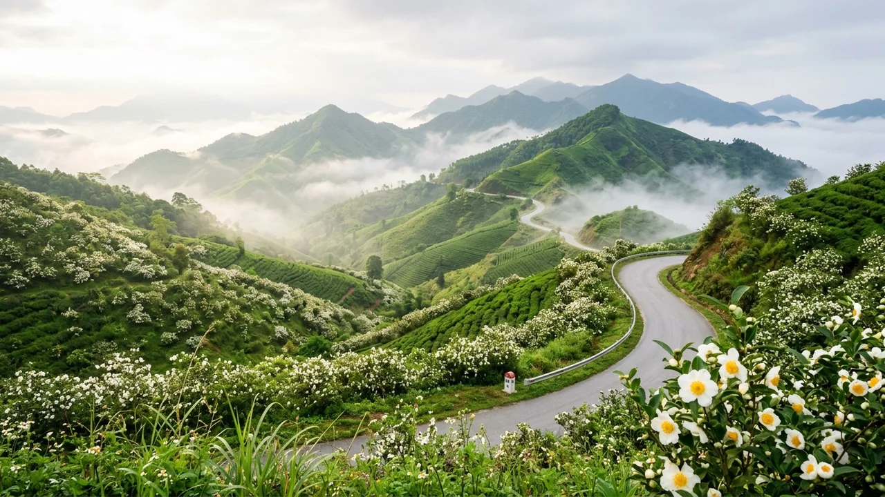
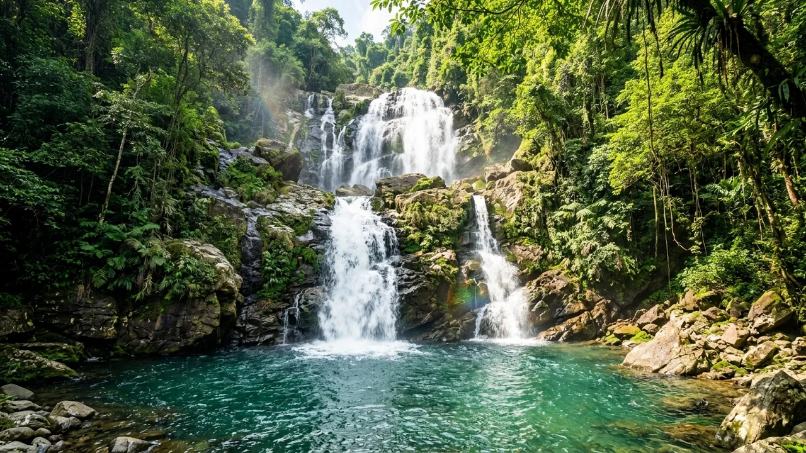
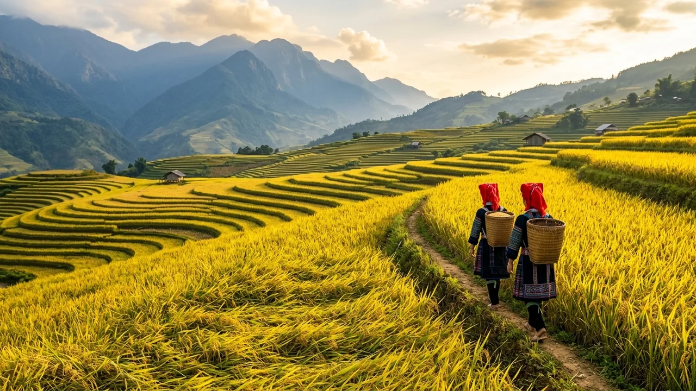
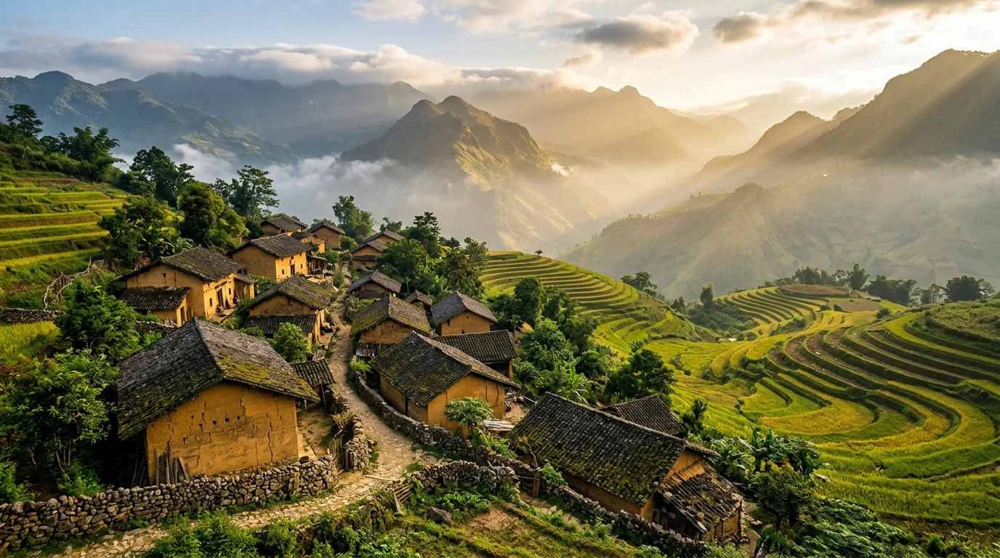
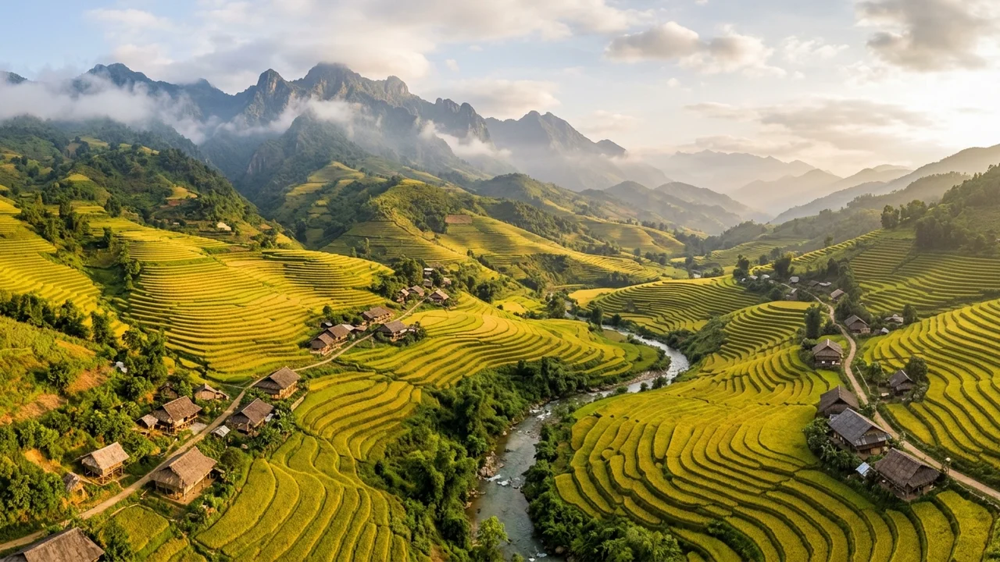
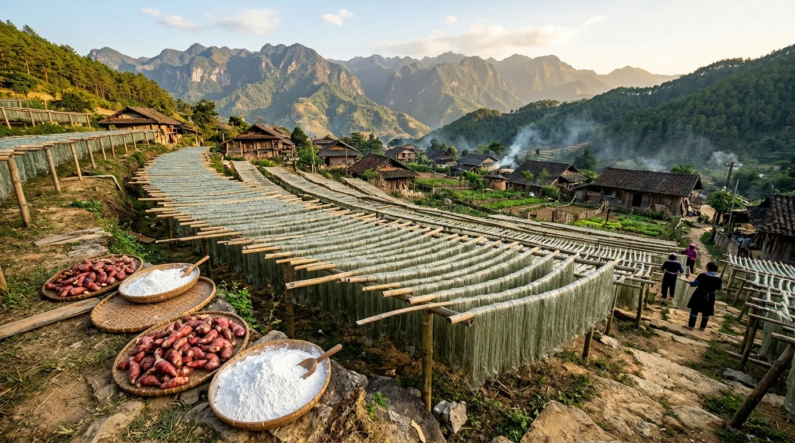
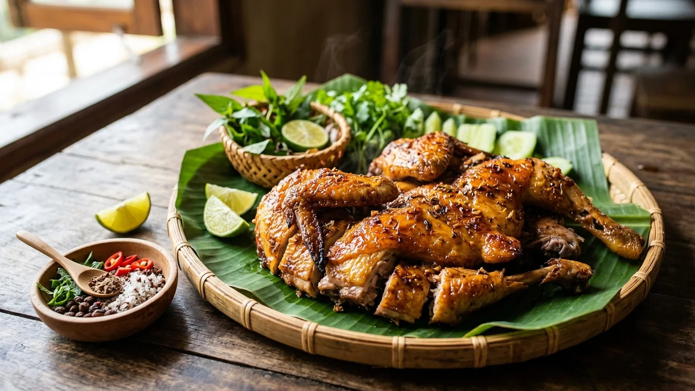
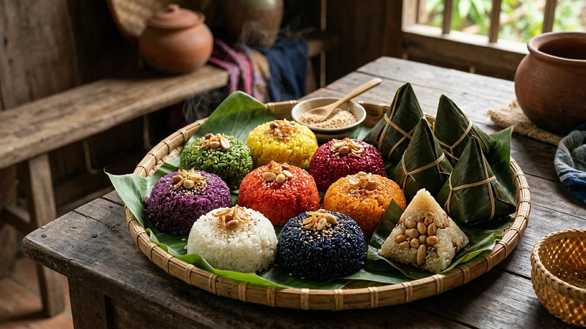
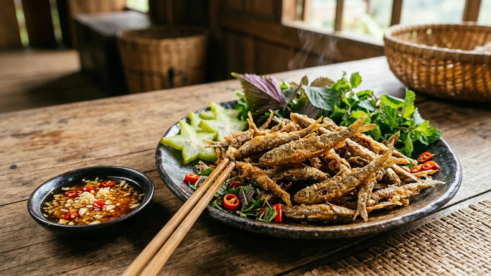
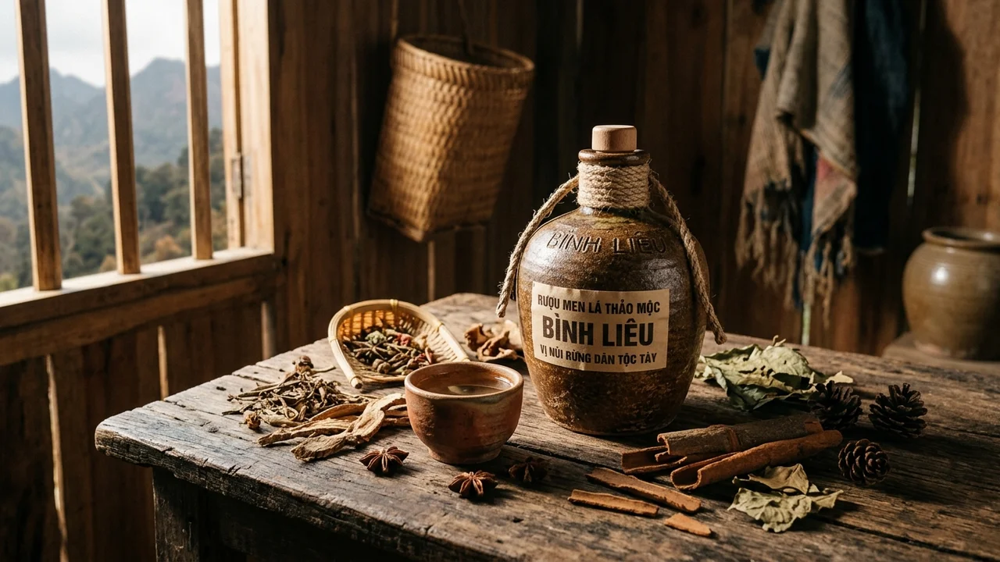

Tổng Quan: Sa Pa Thu Nhỏ Của Vùng Đất Mỏ Quảng Ninh
Nằm cách thành phố Hạ Long hơn 100km về phía Đông Bắc, Bình Liêu là huyện miền núi biên giới thanh bình được ví như "Sa Pa thu nhỏ của Quảng Ninh" hay "Vạn lý trường thành phương Bắc của Việt Nam". Nơi đây sở hữu khí hậu mát mẻ quanh năm, núi non trùng điệp ngút ngàn, đường tuần tra biên giới uốn lượn ngoạn mục và đặc biệt là hệ thống cột mốc chủ quyền thiêng liêng nằm rải rác trên các đỉnh núi cao.
Vào độ cuối thu đầu đông hàng năm (từ tháng 10 đến tháng 12), Bình Liêu lại bước vào mùa đẹp nhất khi cả cung đường Sống lưng khủng long mốc 1305 được phủ trắng xóa bởi bạt ngàn cánh đồng cỏ lau trắng muốt đung đưa trong gió heo may. Bên cạnh cảnh sắc thiên nhiên hùng vĩ, Bình Liêu còn là không gian văn hóa giàu bản sắc với hơn 96% dân số là đồng bào các dân tộc Tày, Dao Thanh Phán, Sán Chỉ — nơi lưu giữ những làn điệu Soóng Cọ tha thiết, nghề dệt thêu thổ cẩm và nghề làm miến dong truyền thống.
🌾 Điểm Nhấn Độc Đáo Bình Liêu
Cung đường tuần tra biên giới uốn lượn lưng chừng mây, trải nghiệm chạm tay vào cột mốc chủ quyền biên cương thiêng liêng, chiêm ngưỡng mùa cỏ lau trắng bồng bềnh và ngọn thác Khe Vằn ba tầng tung bọt trắng xóa.
Vị Trí Địa Lý & Dấu Ấn Lịch Sử Bảo Vệ Biên Thùy
Bình Liêu là huyện biên giới nằm ở phía Đông Bắc tỉnh Quảng Ninh, có đường biên giới trên đất liền dài hơn 43km tiếp giáp với huyện Phòng Thành (thành phố Phòng Thành Cảng, tỉnh Quảng Tây, Trung Quốc). Địa hình huyện bị chia cắt mạnh bởi các dãy núi cao thuộc cánh cung Ngân Sơn - Yên Tử, đỉnh cao nhất là núi Cao Xiêm đạt 1.429m mệnh danh là nóc nhà của Bình Liêu.
Trải qua hàng trăm năm lịch sử, nhân dân các dân tộc Bình Liêu luôn giữ vững vị trí phên dậu kiên trung của Tổ quốc. Đình Lục Nà xây dựng từ thời Hậu Lê là nơi thờ Thành hoàng làng Hoàng Cần — vị danh tướng có công đánh đuổi giặc ngoại xâm phương Bắc bảo vệ biên thùy. Ngày nay, đường tuần tra biên giới được bê tông hóa khang trang, không chỉ giữ vững quốc phòng an ninh mà còn mở ra cung đường phượt biên cương ngoạn mục bậc nhất cả nước.
• Quyết định số 80/QĐ-TTg ngày 11/02/2023 của Thủ tướng Chính phủ: Phê duyệt Quy hoạch tỉnh Quảng Ninh thời kỳ 2021 - 2030, tầm nhìn đến 2050 định hướng phát triển du lịch sinh thái, khám phá biên cương Bình Liêu bền vững.
• Nghị định số 34/2014/NĐ-CP ngày 29/04/2014 của Chính phủ: Về Quy chế khu vực biên giới đất liền nước CHXHCN Việt Nam, hướng dẫn an ninh trật tự và thủ tục cư trú vành đai biên giới.
• Quyết định số 1357/QĐ-BVHTTDL ngày 11/04/2018 của Bộ Văn hóa, Thể thao và Du lịch: Công nhận Lễ hội Soóng Cọ của người Sán Chỉ tại huyện Bình Liêu là Di sản văn hóa phi vật thể quốc gia.
• Quyết định số 4870/QĐ-UBND của UBND tỉnh Quảng Ninh: Xếp hạng Di tích lịch sử văn hóa cấp tỉnh Đình Lục Nà.
• Cổng TTĐT Chính phủ:
chinhphu.vn • Cổng TTĐT tỉnh Quảng Ninh: quangninh.gov.vn • Cổng TTĐT huyện Bình Liêu: binhlieu.quangninh.gov.vn.
Huyền Thoại & Truyền Tích Dân Gian Miền Biên Viễn
Gắn liền với địa hình núi cao rừng thẳm, Bình Liêu ấp ủ những huyền thoại thiêng liêng thể hiện tinh thần kiên cường mở đất giữ cõi của các dân tộc:
- Huyền tích Bức Tường Đá Cổ Núi Cao Xiêm: Trên đỉnh Cao Xiêm cao 1.429m có một bức tường đá tự nhiên xếp tầng kỳ lạ dài hàng cây số. Dân gian truyền tụng đó là bức thành lũy do Long Vương dựng nên để ranh giới ngăn chặn quân xâm lăng và bảo vệ nguồn nước trong mát của ngọn thác Khe Vằn nuôi sống muôn loài.
- Truyền thuyết Lễ Hội Hát Soóng Cọ Người Sán Chỉ: Câu chuyện cảm động về đôi trai gái yêu nhau tha thiết nhưng vì tập tục môn đăng hộ đối không lấy được nhau. Họ hẹn nhau vào ngày 16 tháng 3 âm lịch hàng năm lên đỉnh núi hát đối đáp giãi bày nỗi niềm. Từ đó, người Sán Chỉ cứ đến ngày này lại mở hội hát Soóng Cọ (nghĩa là hát xướng đối đáp tìm bạn) suốt đêm thâu bên bờ suối.
- Thần tích Thành Hoàng Hoàng Cần Đình Lục Nà: Vị tướng quân người Tày dũng mãnh chỉ huy nghĩa binh địa phương bẻ gãy các đợt tiến công của giặc phương Bắc, gìn giữ bờ cõi non sông, được nhân dân lập đình thờ phụng ngàn năm khói hương.
Chuỗi Hình Ảnh 4 Mùa Du Lịch Bình Liêu Tuyệt Mỹ
Khí hậu miền núi Bình Liêu mang nét đặc trưng của vùng cao Đông Bắc, với 4 mùa nối tiếp nhau tạo nên những cảnh tượng ngoạn mục hiếm nơi nào có được. Dưới đây là bộ ảnh 4 mùa độc bản tái hiện vẻ đẹp tinh khôi nơi phên dậu Tổ quốc:

Tháng 1 - Tháng 3 • Mùa XuânMùa Xuân: Sắc Trắng Hoa Trẩu, Hoa Sở & Lễ Hội Đình Lục Nà
Tiết trời mát mẻ đón sắc trắng tinh khôi của hoa trẩu bừng nở khắp triền đồi. Người dân nô nức trẩy hội đình Lục Nà và ngày hội Soóng Cọ hát đối giao duyên rộn rã.

Tháng 4 - Tháng 8 • Mùa HạMùa Hạ: Thác Khe Vằn Ba Tầng & Thiên Đường Giải Nhiệt
Khi cái nóng hè gay gắt ở đồng bằng, thác Khe Vằn đổ nước ào ạt mát lạnh giữa rừng nguyên sinh. Điểm cắm trại, bơi lội và trốn nóng tuyệt vời bên dòng nước ngọc bích.

Tháng 9 - Tháng 10 • Mùa ThuMùa Thu: Sóng Vàng Ruộng Bậc Thang Lục Hồn & Húc Động
Tháng 9 và 10, Bình Liêu rực rỡ trong sắc vàng óng ả của những sóng lúa chín bậc thang. Phụ nữ Dao Thanh Phán trong trang phục khăn đỏ rực rỡ gặt lúa rộn tiếng cười vui.
Mùa Đông: Thiên Đường Cỏ Lau Trắng & Lễ Hội Hoa Sở
Mùa cao điểm du lịch đẹp nhất năm: bạt ngàn cỏ lau trắng nở rộ khắp Sống lưng khủng long mốc 1305 tạo nên khung cảnh lãng mạn vô tiền khoáng hậu giữa mây ngàn gió núi.
Top 10 Thắng Cảnh Biểu Tượng Nhất Định Phải Đến
Bình Liêu sở hữu quần thể thắng cảnh biên cương độc nhất vô nhị, từ những bậc thang sống lưng khủng long ngút ngàn đến các ngọn thác ba tầng kỳ vĩ:

1. Sống Lưng Khủng Long & Cột Mốc 1305 — Vạn Lý Trường Thành Biên Cương
Biểu tượng du lịch số 1 Bình Liêu với cung đường bậc thang bê tông kiên cố men theo sống núi hiểm trở. Chinh phục hơn 2.000 bậc thang giữa bạt ngàn cỏ lau trắng muốt để chạm tay vào cột mốc 1305 thiêng liêng ở độ cao gần 1.000m.

2. Cột Mốc Biên Giới 1300 (Đồi Cỏ Lau)
Nằm cách đường tuần tra biên giới chỉ khoảng 100 bậc tam cấp dễ đi, tọa lạc trên đỉnh đồi thoáng đãng với thảm cỏ lau trắng muốt bồng bềnh vây quanh.

3. Cột Mốc Biên Giới 1302 (Thảo Nguyên)
Tọa lạc trên đỉnh đồi thảo nguyên xanh bao la tiếp giáp mốc 1300, cung đường uốn lượn mềm mại như dải lụa vắt qua triền núi non biên cương.

4. Cột Mốc 1327 Đỉnh Núi Thanh Lân — Mốc Thiên Đình Giữa Ngàn Mây
Được mệnh danh là "mốc thiên đình" ngự trên đỉnh núi Thanh Lân quanh năm mây mù bao phủ thuộc xã Đồng Văn. Nơi đây có cây đa cổ thụ ngàn năm sừng sững bên cột mốc hoa cương uy nghiêm giữa lộng gió biên cương Đông Bắc.

5. Thác Khe Vằn Ba Tầng (Kỳ Quan Nước)
Thác nước tự nhiên ba tầng tuyệt mỹ bắt nguồn từ dãy núi Thông Châu, dòng nước đổ từ độ cao 100m qua các bậc đá bazan cổ tạo thành các hồ tắm tự nhiên trong vắt.

6. Đỉnh Cao Xiêm (Nóc Nhà 1.429m)
Đỉnh núi cao nhất Bình Liêu nổi tiếng với bức tường đá cổ bí ẩn dài hàng km do người xưa xếp thủ công để phân chia ranh giới và chăn thả gia súc.

7. Bản Làng Cổ Sông Moóc — Trầm Tích Người Dao Thanh Phán & Nhà Trình Tường Đất Nện
Bản làng cổ lưng chừng núi mây ngàn của người Dao Thanh Phán, nơi lưu giữ nguyên vẹn kiến trúc nhà trình tường đất nện, bờ rào đá cuội mộc mạc, vườn quế hồi ngát hương và nhịp sống bình dị thanh tao.

8. Đỉnh Cao Ly & Thảo Nguyên Săn Mây
Dãy núi cao hơn 1.000m với thảo nguyên cỏ rộng hơn 40ha chăn thả bò dê tự do, điểm cắm trại đón bình minh và biển mây cuồn cuộn tràn qua các thung lũng.

9. Ruộng Bậc Thang Lục Hồn & Khe O
Thung lũng ruộng bậc thang quy mô bậc nhất huyện dưới chân núi Cao Xiêm, những dải ruộng vàng ươm uốn lượn mềm mại hòa cùng nếp nhà người Tày, Dao.

10. Làng Nghề Miến Dong Truyền Thống Bình Liêu — Tinh Hoa Nông Sản Xứ Biên Cương
Nghề làm miến dong thủ công từ củ dong riềng đỏ bản địa, trải qua công đoạn lọc bột, tráng bánh và phơi trên giàn tre đẫm nắng gió biên thùy tạo nên sợi miến xanh xám dẻo dai nức tiếng.
Cẩm Nang Di Chuyển & Cung Đường Giao Thông
Nhờ hệ thống cao tốc hiện đại của Quảng Ninh, việc di chuyển từ Hà Nội lên Bình Liêu ngày nay rất nhanh chóng và thuận lợi:
- Đường bộ (Ô tô / Limousine): Hà Nội → Cao tốc Hà Nội - Hải Phòng - Vân Đồn - Tiên Yên → Rẽ ra nút giao Tiên Yên đi Quốc lộ 18C thẳng lên thị trấn Bình Liêu. Toàn tuyến dài 270km chạy cao tốc hơn 230km, thời gian di chuyển chỉ mất khoảng 3h30 - 4h.
- Xe khách Limousine đưa đón tận nơi: Các nhà xe Limousine 9 - 11 chỗ chạy tuyến Hà Nội - Bình Liêu liên tục hàng ngày (nhà xe Quân Nam, Bằng Phấn) với giá vé từ 250.000 - 300.000 VNĐ/người/lượt.
- Thuê xe máy tại Bình Liêu: Rất sẵn tại thị trấn Bình Liêu và các homestay với giá 150.000 - 200.000 VNĐ/ngày. Đi xe máy là phương tiện tuyệt vời nhất để tự do vượt đèo ngắm các cột mốc biên cương.
🛡️ Quy Định Bắt Buộc Khi Lên Cột Mốc Biên Giới
Thực hiện nghiêm túc Nghị định số 34/2014/NĐ-CP của Chính phủ: Tất cả du khách khi lên vành đai biên giới tuần tra (mốc 1300, 1302, 1305, 1327) bắt buộc phải mang theo CCCD bản gốc để xuất trình khi có sự kiểm tra của lực lượng Bộ đội Biên phòng. Khách nước ngoài phải có giấy phép cấp bởi Công an tỉnh Quảng Ninh.
Tinh Hoa Ẩm Thực Bình Liêu — Hương Vị Biên Cương Đông Bắc
Ẩm thực Bình Liêu đậm đà bản sắc núi rừng kết hợp giữa kỹ nghệ truyền thống của người Tày và người Dao:

1. Miến Dong Bình Liêu Nấu Gà Đồi
Đặc sản OCOP 4 sao trứ danh làm từ 100% củ dong riềng đỏ bản địa. Sợi miến màu xanh chì tự nhiên, nấu lâu không bị nát, dai giòn sần sật trong nước dùng ngọt đậm đà từ gà đồi thả rông.

2. Gà Bản Nướng Than Hoa Mật Ong Rừng
Giống gà bản địa thả chạy đồi thịt săn chắc, thơm ngọt từ xương. Gà nướng nguyên con trên than củi hồng quết mật ong rừng óng ả, chấm muối ớt chanh hạt dổi cay the ấm lòng lữ khách.

3. Xôi Bảy Màu Người Tày & Bánh Coóc Mò
Nếp nương thơm dẻo nhuộm 7 sắc màu tự nhiên từ lá cẩm, hoa trẩu, nghệ và tro bếp. Cùng bánh coóc mò (nghĩa là sừng bò) gói lá chuối dẻo bùi chấm mật mía ngọt ngào truyền thống.

4. Cá Suối Khe Vằn Chiên Giòn Rụm
Cá bơi ngược dòng nước lạnh thác Khe Vằn thịt dai ngọt thơm béo. Cá bắt lên làm sạch chiên vàng giòn rụm ăn được cả xương, cuốn bánh tráng rau rừng chấm nước mắm gừng ớt cay xè.
5. Thịt Lợn Bản Xào Măng Trúc Rừng
Lợn cắp nách chăn thả tự nhiên thịt đỏ au săn chắc, xào đảo cùng những búp măng trúc rừng tươi ngọt hơi đắng nhẹ, thơm nồng hạt sẻn núi rừng làm món nhắm rượu tuyệt hảo.

6. Rượu Men Lá Thảo Mộc Bình Liêu
Rượu nấu từ men lá bí truyền tổng hợp từ hơn 30 vị thảo mộc rừng quý hiếm. Nước rượu trong vắt, uống êm say dịu không đau đầu, giúp lưu thông khí huyết và sưởi ấm mùa đông biên cương.
Bảng Giá Vé Tham Quan & Dịch Vụ Niêm Yết
Giá vé và chi phí dịch vụ du lịch tại Bình Liêu rất bình dân, được quản lý chặt chẽ bởi địa phương:
| Điểm Tham Quan / Dịch Vụ | Mức Giá Tham Khảo | Ghi Chú & Khuyến Nghị |
|---|---|---|
| Khu danh thắng Thác Khe Vằn | 20.000 VNĐ/người lớn 10.000 VNĐ/trẻ em |
Đã bao gồm bảo hiểm du lịch tham quan thác nước ba tầng. |
| Sống Lưng Khủng Long & Cột Mốc 1305 | MIỄN PHÍ VÀO CỬA | Gửi xe máy tại chân dốc: 10.000 VNĐ/xe. Xe ôm chở lên chân bậc thang: 50.000 VNĐ. |
| Cột mốc biên giới 1300, 1302, 1327 | MIỄN PHÍ THAM QUAN | Bắt buộc xuất trình CCCD bản gốc khi có yêu cầu kiểm tra biên phòng. |
| Di tích lịch sử Đình Lục Nà | MIỄN PHÍ VÀO CỬA | Chiêm bái tôn nghiêm, trang phục lịch sự nơi thờ phụng Thành hoàng. |
| Thuê xe máy tại trung tâm thị trấn | 150.000 - 200.000 VNĐ/ngày | Xe số máy khỏe (Wave, Sirius) đổ đầy bình xăng trước khi lên vành đai. |
| Giá phòng Homestay cộng đồng | 100.000 VNĐ/giường dorm 400.000 - 800.000 VNĐ/phòng riêng |
Trải nghiệm nhà trình tường người Dao tại bản Sông Moóc hoặc thị trấn. |
⚖️ Chính Sách Miễn / Giảm Theo Quy Định Nhà Nước
Thực hiện các chính sách ưu đãi của Nhà nước: Miễn phí vé tham quan Thác Khe Vằn đối với người có công cách mạng, Mẹ Việt Nam Anh hùng, thương bệnh binh, người khuyết tật nặng và trẻ em dưới 1,2m.
Gợi Ý Lịch Trình 2N1Đ Săn Cỏ Lau & Mẹo Bản Địa An Toàn
Lịch trình tối ưu hóa trải nghiệm chinh phục trọn vẹn 4 cột mốc sống lưng khủng long và ngắm mùa cỏ lau trắng:
📅 Ngày 1: Hà Nội — Bình Liêu — Thác Khe Vằn — Cột Mốc 1300 & 1302
• Sáng: Xuất phát từ Hà Nội chạy cao tốc Hải Phòng - Vân Đồn đến Tiên Yên, rẽ Quốc lộ 18C lên Bình Liêu ăn trưa tô miến dong gà đồi nóng hổi.
• Chiều: Khám phá Thác Khe Vằn ba tầng tung bọt trắng mát lạnh, sau đó chạy xe máy lên cung đường tuần tra check-in cột mốc 1300 rợp bóng cỏ lau và mốc 1302 ngắm hoàng hôn thảo nguyên.
• Tối: Thưởng thức gà bản nướng mật ong hạt dổi, cá suối chiên giòn và nhâm nhi chén rượu men lá ấm áp bên bếp lửa homestay.
📅 Ngày 2: Chinh Phục Sống Lưng Khủng Long 1305 — Cột Mốc 1327 — Hà Nội
• Sáng: Dậy sớm lúc 6h00 bắt đầu hành trình chinh phục Sống lưng khủng long mốc 1305 giữa biển cỏ lau trắng muốt và mây ngàn bồng bềnh.
• Trưa: Di chuyển qua xã Đồng Văn check-in mốc "thiên đình" 1327 đỉnh Thanh Lân, ghé bản Sông Moóc ngắm hoa sở trắng muốt và ăn trưa thịt lợn bản xào măng trúc.
• Chiều: Ghé đình Lục Nà thắp hương bái tạ Thành hoàng làng, mua miến dong thủ công làm quà rồi chạy cao tốc về lại Hà Nội, kết thúc chuyến đi đầy tự hào biên cương.
💡 Mẹo Chinh Phục Cột Mốc Biên Giới An Toàn
- Thể lực leo mốc 1305: Đoạn bậc thang dài hơn 2km dốc đứng, cần khởi động kỹ cơ chân, đi giày thể thao bám chống trơn và mang theo ít nhất 1 chai nước lọc cùng thanh năng lượng/socola.
- Quy định mang CCCD: Luôn mang theo căn cước công dân bản gốc trong người khi lên cung đường tuần tra biên giới để xuất trình trạm kiểm soát biên phòng.
- Bảo vệ cảnh quan cỏ lau: Không bẻ cành hoa sở, không dẫm đạp làm gãy nát bãi cỏ lau trắng để chụp ảnh sống ảo; tuyệt đối mang toàn bộ rác ni-lông về thị trấn tiêu hủy.